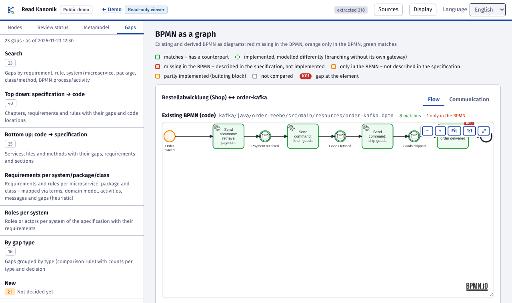
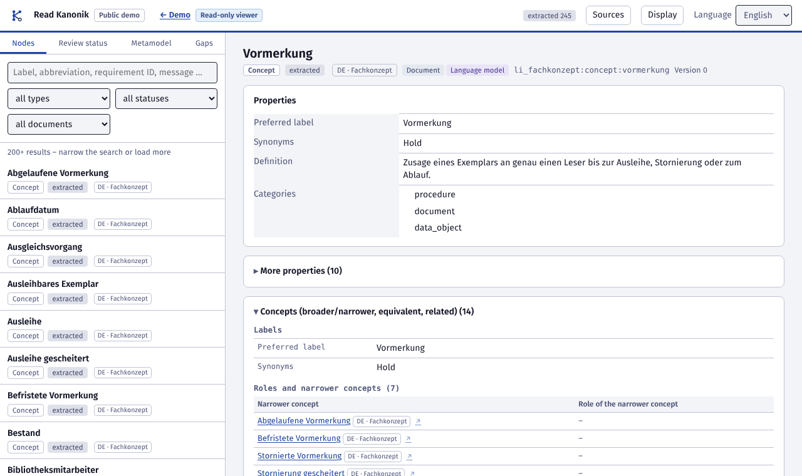

From specification to code – and back
Kanonik reads a business specification, the BPMN processes and the source code of an application and compares the three views. The result is a curated knowledge graph and a list of gaps: what the specification requires but the process or the code does not implement – and the other way round.
This makes the specification the source of truth again, as spec-driven development demands: every requirement stays linked to its place in the document, to terms, rules and processes and to the classes in the code – traceable in both directions.
The examples below are based on freely available open-source projects. Every gap leads to its place in the specification.
More: Knowledge graph and spec-driven development.
Domains

Cinema: ticket reservation
Seat check, alternative seats, payment and ticket delivery – specification versus Camunda 8 process and Java code.

Online retail: order fulfilment
Order, payment, inventory and shipping – specification versus BPMN processes and Kafka microservices.

Library: lending
Holds, checkouts, returns and catalogue – specification versus a DDD domain model with aggregates and events in Java.